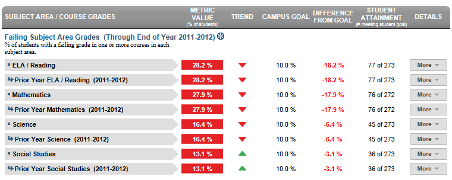

Dashboard Metrics


Failing Subject Area Grades
Background
Campus Dashboard Metrics
Because of the need to closely monitor subject area performance, many school districts across the nation, including Chicago, Dallas and New York, have incorporated metrics on subject area performance into their internal performance management dashboards. In addition, during focus groups conducted with educators, the Failing Subject Area Grades metric, as presented in screen shots of the campus dashboard, was considered useful by the majority of respondents.
Primary Metric
- Failing Subject Area Grades: percentage of students with failing grades in one of the four core subject areas during the current year.
Related Metrics
- none
User Interface
Dashboard Example
Figure 1 shows the Failing Subject Area Grades metric as seen on the campus dashboard.

Figure 1 Ed-Fi Failing Subject Area Grades Metric
Status Definition on the Dashboard
Metric Indicator | Comparisons | |||
Metric Title | Metric Sub-metric | Metric Status Indicator | Trend | Delta |
| Failing Subject Area Grades | ELA/Reading | Red = (Percentage) = if percentage of students failing one or more ELA/Reading courses is greater than or equal to the goal (default is 5%). Green = (Percentage) = if percentages of students failing one or more ELA/Reading courses is less than the goal (default is 5%). | N/A | The difference between the Campus Goal and the calculated percentage of students failing the subject area course. |
Mathematics | Red = (Percentage) = if percentage of students failing one or more Mathematics courses is greater than or equal to the goal (default is 5%). Green = (Percentage) = if percentages of students failing one or more Mathematics courses is less than the goal (default is 5%). | N/A | The difference between the Campus Goal and the calculated percentage of students failing the subject area course.
| |
Science | Red = (Percentage) = if percentage of students failing one or more Science courses is greater than or equal to the goal (default is 5%). Green = (Percentage) = if percentages of students failing one or more Science courses is less than the goal (default is 5%). | N/A | The difference between the Campus Goal and the calculated percentage of students failing the subject area course. | |
| Social Studies | Red = (Percentage) = if percentage of students failing one or more Social Studies courses is greater than or equal to the goal (default is 5%). Green = (Percentage) = if percentages of students failing one or more Social Studies courses is less than the goal (default is 5%). | N/A | The difference between the Campus Goal and the calculated percentage of students failing the subject area course. | |
Trend Definition
In the full Ed-Fi implementation, the system will want to show prior year and final grades for each subject if the first grading period isn't complete. Furthermore, once the first grading period is complete, the trend shows the difference between first grading period and final year grade from the prior year.
The trend is not implemented for Release 2. This is for documentation purposes.
Trend Indicators: Objective is to indicate Course Grades | |||
| Up green | If there is an increase in the number of failing grades, falling grades or courses repeated, then display a gray arrow trending upward | |
 | Unchanged | If there is no change in the number of failing grades, falling grades or courses repeated from the prior grading period, then display two gray arrows pointing outward indicating no change. | |
| Down red | If there is a decrease in the number of failing grades, falling grades or courses repeated from the prior grading period, then display a gray arrow trending downward | |
The trend does not show if the student is in the first grading period as data is not available.
Trends are not reflected if data is not available for two or more grading periods.
Periodicity
The data is most actionable when loaded at the end of each grading period after grades are posted. Grading periods vary by state and district.
Recommended Load Characteristics | |
Calendar | Throughout the school year |
Frequency of data load | Grading Period |
Latency | Grading Period |
Interchange schema | Interchange-StudentGrade.xsd |
Tooltips
The standard tool tips for the failing subject area grades metric definition, column headers, and help functions display for this metric.
The following are tooltips specific to the metric:
- "More" indicates drill down to view ‘Academic Profile’
- is ‘No change from the prior period’
 is ‘Getting worse from the prior period
is ‘Getting worse from the prior period is ‘Getting better from the prior period'
is ‘Getting better from the prior period'
Business Rules
Data Assumptions
- Student grade information is available for multiple grading periods for the current year. If the grade information is unavailable, the values is blank.
- Student grade information is available through the grade.
- Grades for each student are based on the latest grading period.
- Course grades are numeric or letter-based.
- District sets the value that drives the student thresholds (numeric and/or letter grade).
Data Anomalies
Anomalies
Best practice is to use footnotes to address these anomalies:
- Loading of data from each grading period
- Late enrollees may not have previous grading period grades from another school
- Missing transcripts for transfer students
Footnotes
Footnotes are used to provide addition data information concerning the metric. Footnotes are sequential for the entire page. Therefore, a metric's footnote may not begin with the number 1.
The following footnotes appear below the metric:
- Late enrollee students that have not been present for a full grading period should be noted by a designated icon
- Missing transcripts for transfer students
Date of Refresh
Best practice is for the date of last data refresh to appear next the metric in the following format:
- (Through Third Grading Period)
Implementation Considerations
Student Identity
Maintaining a correct and consistent student identity is at the center of any education data system. Most systems use some sort of unique identifier. However, sometimes this identifier is entered incorrectly or sometimes different systems use different identifiers.
The UDM XML supports the interchange of multiple types of identifiers. The StudentReference is a complex type within the UDM to maintain the referential integrity of the student (that is, ensuring that the data associated with each student is accurately associated with the right student). The complex type of the student reference assists with implementing the accurate matching algorithm to identify a student by utilizing any of the individual attributes (e.g., Student Unique State ID, Student ID, Campus Local ID (with Campus ID), Name and Birth Date). For example, if the Student Unique State ID is unknown, you can find the student’s identity by their Student ID, First Name, Last Name and Birth Date.
Numeric or Letter Grading System
Best practice is for the metric to support both numeric and letter grading systems.
Late Enrollments
For late enrollment students, consider whether or not there is previous grading period data to compare to the latest grading period.
Frequency of Uploading Data
The metric computation implementation may vary depending on the periodicity of loading the data.
Current Grading Period
Data for the current grading period must exist for the Course Grades metric to exist.
Drill Downs
Drill Down Views
The dashboards include the option to see more detail that is associated with a specific metric. Table 7 lists the drill down views that are recommended for this metric.
| Advanced Analysis | Break down of student test assessment (commended, not commended, met standard, and didn't meet standard) (Future Implementation) | |
| Historical | Graph of metric values across multiple time periods (current and prior years). | |
| Student List | List of students who do not meet the threshold for this metric for the specified period. |